<!doctype html>
<html lang="fr">

    <head>
        <meta charset="utf-8">

        <title>tempus.md</title>

        <meta name="author" content="Oslandia">

        <meta name="apple-mobile-web-app-capable" content="yes" />
        <meta name="apple-mobile-web-app-status-bar-style" content="black-translucent" />

        <meta name="viewport" content="width=device-width, initial-scale=1.0, maximum-scale=1.0, user-scalable=no">

        <link rel="stylesheet" href="static/reveal.js/css/reveal.css">
        <link rel="stylesheet" href="static/reveal.js/css/theme/moon.css" id="theme">

        <!-- For syntax highlighting -->
        <link rel="stylesheet" href="static/reveal.js/lib/css/zenburn.css">

        <!-- Oslandia customizations -->
        <link rel="stylesheet" href="static/oslandia.css">

        <!-- If the query includes 'print-pdf', include the PDF print sheet -->
        <script>
            if( window.location.search.match( /print-pdf/gi ) ) {
                var link = document.createElement( 'link' );
                link.rel = 'stylesheet';
                link.type = 'text/css';
                link.href = "static/reveal.js/css/print/pdf.css";
                document.getElementsByTagName( 'head' )[0].appendChild( link );
            }
        </script>

        <!--[if lt IE 9]>
        <script src="lib/js/html5shiv.js"></script>
        <![endif]-->
    </head>

    <body>

        <div class="reveal" >
        <div class="slides">
            <section data-markdown data-separator="^\n---\n$" data-vertical="^\n--\n$">
                <script type="text/template">
                    # Tempus
## A framework for multimodal route planning


Hugo Mercier, *Oslandia*

Geospatial devroom, FOSDEM 2015

<!-- .slide: data-background="oslbackground.png" data-background-size="650px" -->


Note:
La fenêtre du speaker peut être ouverte avec la touche 's'
Pour noircir la fenêtre, presser 'b'

---

## Context

- A platform for multimodal route planning
- Collaboration with research labs IFSTTAR/CEREMA
- Main objectives :
  - Extensibility
  - Performances
- Use cases :
  - New route planning algorithms. Tests and benchmarks
  - Production-scale multimodal route planner
- Young project :
  - First open source release : may 2014

---

## Architecture

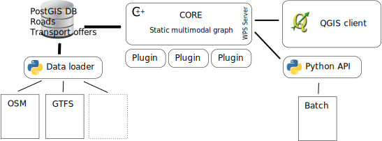

---

## Tempus core

- In-memory representation of the graph
- Templated C++
- Uses boost::graph
- Graph loaded from a PostGIS db
- Answers WPS requests
- Multi-threaded

---

## Graph data model

"Multimodal" graph :

- One road graph
- N public transport graphs
- M points of interests (parkings, shared bike stations, shared cars, etc.)
- linked on road edges

---


---

## Multimodal adjacency

- A "meta" graph on top of other graphs (road, PT)
- Seen as a Boost graph (duck typing)
  - Node : node of the underlying graph
  - Edge : **needs special adjacency rules**

---

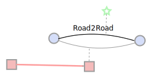

---

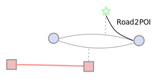

---

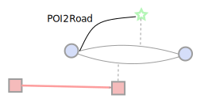

---

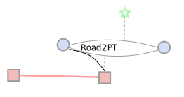

---

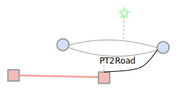

---

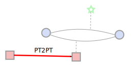

---

## Plugins

---

## Plugins

- Modular architecture with C++ plugins
- Each declared plugin
  - can be requested by the user
  - receives the global graph in input
  - must produce roadmaps in response
- Allows to easily experiment new features

---

## Plugins

Current active plugin :

- A* <!-- .element: class="fragment" data-fragment-index="1" -->
- Focus on multimodal  <!-- .element: class="fragment" data-fragment-index="2" -->
  - Walking + PT + Shared bikes and cars  <!-- .element: class="fragment" data-fragment-index="3" -->
  - Parkings  <!-- .element: class="fragment" data-fragment-index="4" -->
- Turn restrictions  <!-- .element: class="fragment" data-fragment-index="5" -->
- Speed profiles  <!-- .element: class="fragment" data-fragment-index="6" -->

Note:
In addition to basic sample plugins.

---

## Turn restrictions

Takes into account possibly complex turn restrictions

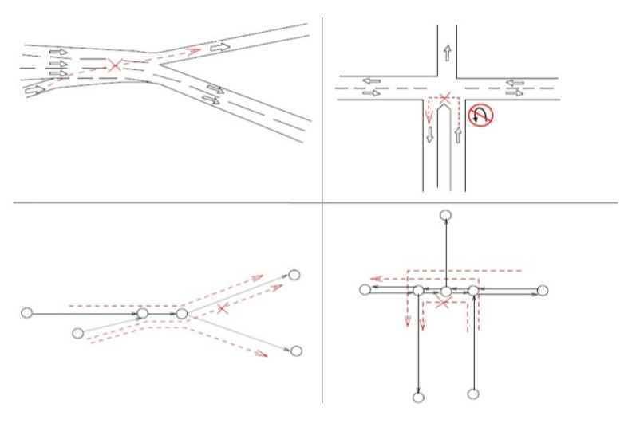

The graph is augmented with an automaton

---

## Speed profiles

Average speed, depending on time and day, for a given transport mode and a given road edge.

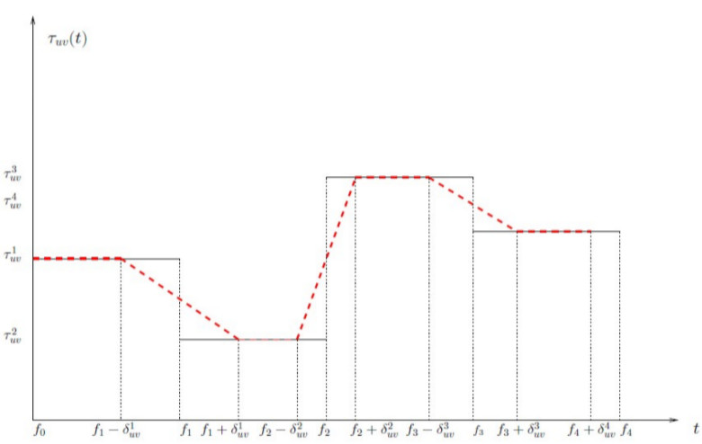

---

## Data loader

---

## Data loader

- Imports data into a PostGIS database   <!-- .element: class="fragment" data-fragment-index="1" -->
- Roads:   <!-- .element: class="fragment" data-fragment-index="2" -->
  - OpenStreetMap
  - Navteq
  - Multinet
  - Elevation data: SRTM, BDAlti (IGN)
- Public transports:  <!-- .element: class="fragment" data-fragment-index="3" -->
  - GTFS
- POI:  <!-- .element: class="fragment" data-fragment-index="4" -->
  - Shapefiles
- In development:  <!-- .element: class="fragment" data-fragment-index="5" -->
  - BDTopo, Route120, Route500 (IGN)
  - Chouette (PT)

---

## OSM import

From a shapefile export:
```
./load_tempus -t osm -s /xxxx/ -p nantes_ -d "dbname=tempus_test_db" -R
```

From a native .pbf file, needs some processing first :
```
osmosis --read-pbf aquitaine-latest.osm.pbf \
        --bb left=-0.8749 top=45.269 right=0.0505 bottom=44.3508 \
        --wx - \
      | ~/tempus/bin/osm2shp -d ./tempus_shp /dev/stdin
./load_tempus -t osm -s ./tempus_shp -S 4326 -d "dbname=tempus_bdx" -R
```

- Imports turn restrictions
- Handles topology processing

Note:
OSM data cannot be used out of the box to route. It lacks topology constraints.

---

## OSM import (2)

- OSM focuses on visualization, not routing
- not a graph !

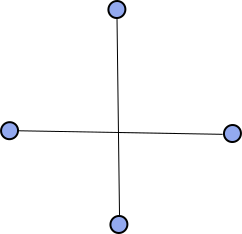 => 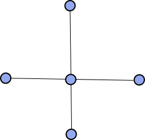

---

## POI import

Nantes shared bikes.
```
./load_tempus -t poi \ # type : POI
              -y 4   \ # POI type: shared bikes
              -v name:NOM_COMPLE     \  # field to use as station names
                 service_name:Bicloo \
                 filter:type=100301  \  # filter to apply
              -s /xxx/LOC_EQUIPUB_MOBILITE_NM.shp \
              -d "dbname=tempus_nantes" \
              -W LATIN1 \
              -S 2154
```

---

## WPS server

---

## WPS

- WPS ~= RPC XML OGC standard
- Uses FastCGI
- Multi-threaded: can answer to parallel requests
- XML
  - Input: request
  - Output: roadmap

---

## Clients

---

## Clients

- Python client on top of a WPS client
  - Dedicated QGIS plugin
  - unit tests
  - batch scripts

---

## QGIS plugin

Video

https://vimeo.com/114875069

---

## Performances

- Itinerary accross mid-sized town (Nantes area)
- Machine: Core i7
- Algorithm: Dijkstra

Modes | Time
---|---
Pedestrian only | ~10ms
Private car + parking | ~280ms
Walking + PT | ~225ms

Still room for optimizations in the multimodal case

---

### Does it scale ?

Memory

- French "region" : ok
- France, Europe and more : working on

CPU

- Scales ~linearly

---

## Future

- More algorithms
  - "Raptor" / Connection-Scan for Public transports
  - Hierachical road network ("Contraction hierarchies")
  - Hard to adapt to the "dynamic" multimodal case
- New data
  - Roads "preferred" by bikes
  - Wheelchair / pushchair access

---

## Future (2)

- New transport modes
  - electrical vehicles (charge/discharge/stations)
- New optimization criteria :
  - "Simplest" path
  - The most "confortable": elevation, landscape, etc.
  - Minimal cost (fare zones)
- Bi-and multi-objective optimization

---

https://github.com/ifsttar/tempus

contact@oslandia.com

                </script>
            </section>
        </div>
        <script src="static/reveal.js/lib/js/head.min.js"></script>
        <script src="static/reveal.js/js/reveal.js"></script>

        <script>

            // Full list of configuration options available here:
            // https://github.com/hakimel/reveal.js#configuration
            Reveal.initialize({
                controls: false,
                progress: true,
                history: true,
                center: true,
                mouseWheel: false,
                theme: Reveal.getQueryHash().theme, // available themes are in /css/theme
                transition: 'linear', // default/cube/page/concave/zoom/linear/fade/none

                // Optional libraries used to extend on reveal.js
                dependencies: [
                    { src: "static/reveal.js/lib/js/classList.js", condition: function() { return !document.body.classList; } },
                    { src: "static/reveal.js/plugin/markdown/marked.js", condition: function() { return !!document.querySelector( '[data-markdown]' ); } },
                    { src: "static/reveal.js/plugin/markdown/markdown.js", condition: function() { return !!document.querySelector( '[data-markdown]' ); } },
                    { src: "static/reveal.js/plugin/highlight/highlight.js", async: true, callback: function() { hljs.initHighlightingOnLoad(); } },
                    { src: "static/reveal.js/plugin/zoom-js/zoom.js", async: true, condition: function() { return !!document.body.classList; } },
                    { src: "static/reveal.js/plugin/notes/notes.js", async: true, condition: function() { return !!document.body.classList; } }
                ]
            });

        </script>

    </body>
</html>